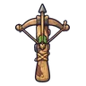 หน้าไม้ไม้สน | 1 | 54 | ไม่มีธาตุ | ไก่ป่าเจ้าอารมณ์ 0.25% |
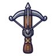 หน้าไม้พราน | 1 | 51 | ไม่มีธาตุ | อาวุธเริ่มต้นของสาย (ได้ตอนเปลี่ยนอาชีพ) |
 หน้าไม้หุ่นไล่กา หน้าไม้หุ่นไล่กา | 6 | 52 | ไม่มีธาตุ | หุ่นไล่กาผีสิง 0.12% |
 หน้าไม้เหล็กช่างตี หน้าไม้เหล็กช่างตี | 10 | 58 | ไม่มีธาตุ | อีกายักษ์ 0.25% |
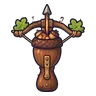 หน้าไม้ลูกโอ๊ก | 13 | 52 | ดิน | เห็ดหมอ 0.12% |
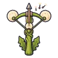 หน้าไม้ดอกแดนดิไลออน | 16 | 49 | ลม | ผีเสื้อผงหลับ 0.06% |
 หน้าไม้ก้ามปู หน้าไม้ก้ามปู | 19 | 57 | น้ำ | ปูก้ามโตลำธาร 0.25% |
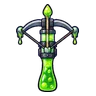 หน้าไม้สไลม์เรืองแสง | 22 | 49 | พิษ | สไลม์เรืองแสง 0.06% |
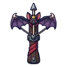 หน้าไม้ราชาค้างคาว | 25 | 67 | มืด | ราตรีราชาค้างคาว 0.5% |
 หน้าไม้เหล็กกล้าทหาร หน้าไม้เหล็กกล้าทหาร | 27 | 92 | ไม่มีธาตุ | ปูหินโล่ใหญ่ 0.25% |
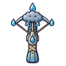 หน้าไม้เมฆฝน | 29 | 78 | น้ำ | แกะเมฆเขาม้วน 0.06% |
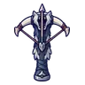 หน้าไม้เขี้ยวหมาป่า | 31 | 82 | มืด | หมาป่าเงาจันทร์ 0.12% |
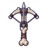 หน้าไม้กระดูกทหาร | 34 | 91 | ไม่มีธาตุ | โครงกระดูกทหาร 0.25% |
 หน้าไม้ยามหอคอยกลวง หน้าไม้ยามหอคอยกลวง | 36 | 78 | มืด | ยามหอคอยกลวง ร่างยามซีด 0.12% |
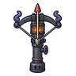 หน้าไม้เตาถ่าน | 36 | 78 | ไฟ | แม่มดเทียนไข 0.06% |
 หน้าไม้คราดชาวนาซอมบี้ หน้าไม้คราดชาวนาซอมบี้ | 38 | 82 | ไม่มีธาตุ | ซอมบี้ชาวนา 0.12% |
 หน้าไม้ตอไม้ผี หน้าไม้ตอไม้ผี | 40 | 92 | ไม่มีธาตุ | ตอไม้ผี 0.25% |
| หน้าไม้หางแมงป่อง | 42 | 82 | ไฟ | แมงป่องแดง 0.12% |
 หน้าไม้ค้างคาวว่าวขาด หน้าไม้ค้างคาวว่าวขาด | 44 | 86 | ลม | ค้างคาวว่าวขาด ร่างว่าวแดง 0.5% |
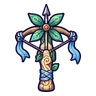 หน้าไม้กังหันลม | 45 | 82 | ลม | ภูตลมใบมีด 0.12% |
 หน้าไม้ป้ายหลุมศพ หน้าไม้ป้ายหลุมศพ | 47 | 78 | วิญญาณ | ป้ายหลุมศพผีสิง 0.06% |
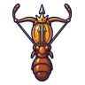 หน้าไม้นางพญามด | 50 | 107 | ดิน | รังนางพญามด 0.5% |
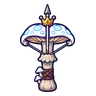 หน้าไม้ราชาเห็ด | 50 | 107 | พิษ | ราชาเห็ดเรืองแสง 0.5% |
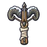 หน้าไม้แกะเขาหิมะถล่ม | 51 | 126 | ดิน | แกะเขาหิมะถล่ม ร่างขนดำ 0.5% |
 หน้าไม้นักล่าเงียบ หน้าไม้นักล่าเงียบ | 52 | 126 | ไม่มีธาตุ | ตัวอ่อนต้นแม่พิษ 0.25% |
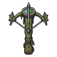 หน้าไม้กัปปะหนองหมอก | 55 | 112 | น้ำ | หยดหมึกแตกตัว 0.12% |
 หน้าไม้รากลมหวีด หน้าไม้รากลมหวีด | 56 | 123 | ลม | บอสผู้ถูกรากสิง |
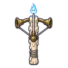 หน้าไม้ภูตเทียน | 58 | 107 | วิญญาณ | วิญญาณเทียน 0.06% |
 หน้าไม้คางคกพิษ หน้าไม้คางคกพิษ | 61 | 112 | พิษ | คางคกพิษ 0.12% |
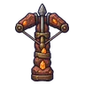 หน้าไม้โกเลมหินแดง | 64 | 118 | ดิน | โกเลมหินแดง 0.25% |
 หน้าไม้ซาลาแมนเดอร์ หน้าไม้ซาลาแมนเดอร์ | 67 | 107 | ไฟ | ซาลาแมนเดอร์ 0.06% |
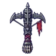 หน้าไม้อัศวินกระดูก | 70 | 112 | ไม่มีธาตุ | อัศวินกระดูก 0.12% |
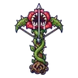 หน้าไม้ดอกไม้กินคน | 72 | 112 | ไม่มีธาตุ | ดอกไม้กินคน 0.12% |
| หน้าไม้ดาวเหนือ | 73 | 107 | ศักดิ์สิทธิ์ | ผลึกดาวมีชีวิต 0.06% |
| หน้าไม้ราชาสุสาน | 75 | 146 | มืด | บัลลังก์ราชาสุสาน 0.5% |
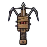 หน้าไม้แมงมุมลังไม้ | 76 | 144 | ไม่มีธาตุ | แมงมุมลังไม้ ร่างหมึกดำ 0.24% |
 หน้าไม้กลช่างหลวง หน้าไม้กลช่างหลวง | 77 | 151 | ไม่มีธาตุ | ผู้จุดตะเกียงรุ่นแรก 0.25% |
| หน้าไม้อิมป์เปลวไฟ | 80 | 144 | ไฟ | อิมป์เปลวไฟ 0.12% |
 หน้าไม้วาฬราตรี หน้าไม้วาฬราตรี | 83 | 137 | น้ำ | พลีซิโอซอร์ 0.06% |
 หน้าไม้ด้วงแรด หน้าไม้ด้วงแรด | 85 | 156 | ไม่มีธาตุ | ด้วงแรดยักษ์ 0.25% |
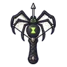 หน้าไม้แมงมุมใยราตรี | 87 | 137 | พิษ | หนูคลอง 0.06% |
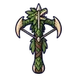 หน้าไม้แร็พเตอร์ใบไม้ | 89 | 144 | ลม | แร็พเตอร์ใบไม้ 0.12% |
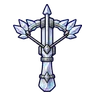 หน้าไม้ผลึกปริซึม | 90 | 137 | ศักดิ์สิทธิ์ | โกเลมหินแดง 0.06% |
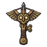 หน้าไม้นกฮูกไขลาน | 92 | 137 | ลม | นกฮูกไขลาน ร่างเงิน 0.12% |
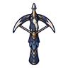 หน้าไม้นกกระสาเงา | 93 | 156 | ไม่มีธาตุ | นกกระสาเงา 0.25% |
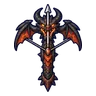 หน้าไม้มังกรลาวา | 97 | 187 | ไฟ | หัวใจมังกรลาวา 0.5% |
 หน้าไม้ทางช้างเผือก หน้าไม้ทางช้างเผือก | 99 | 203 | ศักดิ์สิทธิ์ | ดรอปทั่วโลก Lv 90+ |